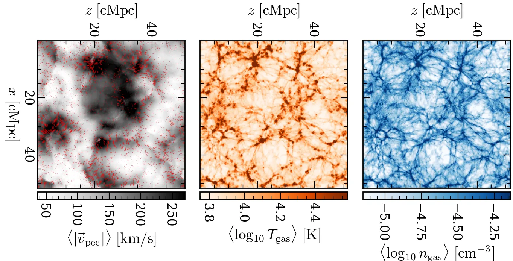

Section 3 • Transmitted Flux
3.1 Gas and Line Properties
The absorption produced by a given gas-species – transition pair \((i,j)\) depends on two kinds of information:
The local thermodynamical/physical state of the gas that contains the absorber, and
The intrinsic atomic/molecular properties of the transition line that is being excited.
For clarity, we separate the relevant quantities into gas properties, transition properties. Unless stated otherwise, \(\vec{x}\) denotes comoving position.
3.1.1 Gas properties.
The index \(i\) labels the absorbing gas species or ion under consideration (for example H I, Si II, Si III, etc.). Its local physical state is described by:
\(m_i\): mass of one absorbing particle of species \(i\). Units: \(\left[\mathrm{amu}\right]\).
\(n_{i\,{\rm com}}(\vec{x})\): comoving number density of absorbers. More precisely, this should be interpreted as the number density of particles in the relevant absorbing state. For a resonance line, this is usually the population of the lower level of the transition. The corresponding proper number density is \begin{align} n_{i\,{\rm phys}}(\vec{x})=\frac{n_{i\,{\rm com}}(\vec{x})}{a(\vec{x})^3}. \tag{3.1} \end{align} Units: \(\left[\mathrm{cm}^{-3}\right]\).
\(T_i(\vec{x})\): kinetic temperature of the gas. This sets the thermal velocity dispersion of the absorbers and therefore the thermal Doppler broadening of the line. Units: \(\left[\mathrm{K}\right]\).
\(\vec{v}_i(\vec{x})\): peculiar velocity field of the gas, i.e. the velocity relative to the pure Hubble flow. Units: \(\left[\mathrm{km}\,\mathrm{s}^{-1}\right]\).
\(v_{i\,\parallel}(\vec{x})\): line-of-sight projection of the peculiar velocity. This quantity shifts the local resonance condition through the Doppler effect (We will introduce this concept when presenting Eq. 3.5). Units: \(\left[\mathrm{km}\,\mathrm{s}^{-1}\right]\).
\(b_{i\,{\rm turb}}(\vec{x})\): microturbulent velocity dispersion. This is a phenomenological description of unresolved small-scale random motions inside the absorbing gas element. Under the usual microturbulent approximation, it broadens the line in the same Gaussian way as thermal motions. Units: \(\left[\mathrm{km}\,\mathrm{s}^{-1}\right]\).

3.1.2 Line properties.
The index \(j\) labels a specific transition of that species. For example, if the gas species \(i\) is neutral hydrogen HI, then different choices of \(j\) could correspond to the Ly\(\alpha\) transition at \(\simeq 1215.67\,\text{\AA}\) or the Ly\(\beta\) transition at \(\simeq 1025.72\,\text{\AA}\). Likewise, if \(i\) corresponds to SiIII, one possible choice of \(j\) is the strong resonance line at \(\simeq 1206.50\,\text{\AA}\).
The transition line characteristics include:
\(\lambda_j\): rest-frame wavelength of the transition. Units: \(\left[\text{\AA}\right]\).
\(f_j\): absorption oscillator strength of the transition. This is a dimensionless quantity that measures the intrinsic strength of the coupling between the radiation field and the line.
\(A_j\): Einstein spontaneous-emission coefficient of the upper level. Its inverse gives the radiative lifetime of the excited state, and it sets the natural (radiative) contribution to the Lorentzian width. Units: \(\left[\mathrm{s}^{-1}\right]\).
\(A_{j\,{\rm coll}}(\vec{x})\): effective collisional damping rate. This term accounts for pressure/collisional broadening, i.e. the extra Lorentzian broadening produced when collisions shorten the coherence time of the transition. In the diffuse IGM this contribution is often negligible, but we keep it for generality. Units: \(\left[\mathrm{s}^{-1}\right]\).
3.1.3 Derived broadening quantities.
From the quantities above we construct the local Gaussian and Lorentzian widths that enter the line profile calculation (see Eq. 3.16).
First, the thermal Doppler broadening standard deviation parameter – Units: \(\left[\mathrm{GHz}\right]\) – is given by: \begin{align} \sigma_{ij}(\vec{x}) = \frac{b_i(\vec{x})}{\sqrt{2}\lambda_j}, \qquad b_i(\vec{x})= \sqrt{b_{i\,{\rm th}}^2(\vec{x}) + b_{i\,{\rm turb}}^2(\vec{x})}, \qquad b_{i\,{\rm th}}(\vec{x})=\sqrt{\frac{2k_B T_i(\vec{x})}{m_i}}. \tag{3.2} \end{align}
The Lorentzian half-width at half maximum – Units: \(\left[\mathrm{GHz}\right]\) – is \begin{align} \gamma_j(\vec{x}) = \frac{A_j + A_{j\,{\rm coll}}(\vec{x})}{4\pi}. \tag{3.3} \end{align}
These quantities fully specify the local thermodynamic, kinematic, and spectroscopic ingredients needed to construct the absorption profile associated with the pair \((i,j)\).